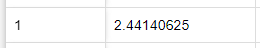
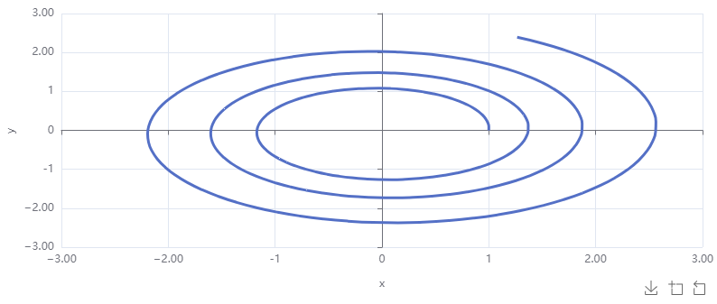

Explore both the ODEs from the last section and several modeling examples.
Discuss simulation and display settings in Insightmaker.
Example1.2.1.Malthusian (Exponential) Growth.
Here we will consider the example given by Example 1.1.3, but add some context so that we can use more of the features of Insightmaker. Here is the set up for the problem: A population of creatures is initially \(10\) and grows exponentially. If the population is \(20\) after three weeks, what will the population be in one year?
Solution1.Calculus Class Version
First we will give the standard formulation and solution using Calculus. The problem may be reformulated as the IVP
\begin{equation*}
P' = kP, P(0) = 10,
\end{equation*}
where \(P\) represents the number of creatures, the independent variable is \(t = \) time in weeks, and \(k\) is the continuous percent growth rate in units of \(\frac{1}{\text{weeks}}\text{.}\) We can then observe (by whatever technique you prefer) that the general solution is given by
Using the data point \(P(3) = 20\text{,}\) we find \(k = \frac{\ln(2)}{3}\approx 0.23\text{.}\) Thus, \(P(52) \approx 10e^{0.23\cdot 52} \approx 165,140\) creatures. However, this solution isn’t the point of this text! We are only including it to reference the result.
Solution2.Using Insightmaker
The Insight that we will use to solve this problem is below
Two features we will use in this solution are having sliders linked and using the tabular output option. To show the output of the simulation as a table instead of the graph of a function, use the configuration button in the simulation window and choose "table" as indicated in the image to the right.
Choosing the tabular output option.
Upon scrolling through the table with \(k=0.1\text{,}\) we find \(P(3) \approx 13.5\text{.}\) Thus, \(k\) is too small.
Output at \(t=3\) when \(k=0.1\text{.}\)
Adjusting the slider for \(k\) until we have \(P(3)\approx 20\text{,}\) we see the correct value of \(k\) is about \(0.23\text{.}\) If we adjust the step size in the slider below \(0.01\text{,}\) we can opbtain a more accurate value.
Output at \(t=3\) when \(k=0.23\text{.}\)
Now is a good time to discuss the simulation settings in Insightmaker. You get to these by clicking the "Settings" button in the top toolbar.
The first important settings are the Basic Simulation Settings. These include the following:
Simulation Start: This is the time value at the start of the simulation, which is the time value indicated by the initial value problem (\(t_0\) in Definition 1.1.1).
Simulation Length: This is how long the simulation will run. If you are interested in the value of a stock at some specific time after the start time, you may use the difference between the specified time and the start time as the simulation length.
Time Units: This is the unit of time. For example, if Seconds are chosen, then \(t=1\) means \(1\) second.
Basic Simulation Settings
Two more important settings are the Advanced Simulation Settings. These include the following:
Simulation Time Step: Insightmaker simulations use numerical methods to approximate values of stocks as functions of time. The outputs are only approximated at discrete time values starting with the simulation start time and moving in the positive direction in increments of this step size. A smaller time step updates the approximation more frequently and is thus more accurate. However, smaller time steps take more computations and hence run slower.
Basic Simulation Settings
Simulation Algorithm: The algorithms available for simulation with Insightmaker are Euler’s Method and the 4th Order Runge-Kutta Method (RK4). Euler’s Method uses the ODE to compute the slope at each point and follows a linear approximation to \(y\) for one time step, then repeats. The RK4 Method is more complicated and its description is beyond the scope of this text.
The primary differences between the two is accuracy vs. speed. Euler’s Method is what is known as a first order method, which means error decreases linearly with the step size. In other words, if you cut the time step in half, the error is Euler’s Method will also be (approximately) cut in half. The RK4 Method is a 4th order method, so the error is approximately proportional to the step size to the 4th power, i.e. if you cut the time step in half, the error will be (approximately) multiplied by \(1/16\text{.}\)
Example1.2.2.Exploration of Settings.
In this example we will explore the simulation algorithm and step size settings in the context of the exponential growth model Example 1.2.1, but with initial value \(P(0)=1\) and \(k=1\text{.}\) This yields \(P(t) = e^t\text{,}\) so we know that \(P(1) = e\approx 2.718\text{.}\) Running the simulation using Euler’s Method with a time step of \(1\text{,}\) we obtain the following graph:
Figure1.2.3.The solution given by Euler’s Method with a time step of \(0.5\text{.}\) The black points are added to show the discrete slopes between the outputs.
To explore how the error at \(t=1\) changes with the step size, we will note that \(P(1) = e\) and use the tabular output.
When the time step is \(0.5\text{,}\) the error at \(t=1\) is \(|e-2.25|\approx 0.468\text{.}\)
Tabular output when the time step is \(0.5\) using Euler’s Method.
When the time step is \(0.25\text{,}\) the error at \(t=1\) is \(|e-2.2.44140625|\approx 0.2769\text{.}\) This is about half of the previous error.

Tabular output when the time step is \(0.25\) using Euler’s Method.
When the time step is \(0.125\text{,}\) the error at \(t=1\) is \(|e-2.56578451|\approx 0.1525\text{.}\) Again, this is about half of the previous error.
Tabular output when the time step is \(0.125\) using Euler’s Method.
Finally, when the time step is \(0.5\) and we instead use the 4th Order Runge-Kutta algorithm, the error at \(t=1\) is \(|e-2.71734619|\approx 0.001\text{.}\)
Tabular output when the time step is \(0.5\) using RK4.
Example1.2.4.The Circular Functions as Solutions to a System.
Here we will explore the system of ODEs introduced in Example 1.1.4 to show the scatter plot (phase plane) display setting and revisit the choice of simulation algorithm. The Insight used here can be found at circular function insight. Choosing the RK4 simulation algortithm with a step size of \(0.1\text{,}\) we obtain the following time series graphs for \(x\) and \(y\) as functions of \(t\text{.}\) In this we see a nice match for the exact analytic solutions \(x(t) = \cos(t)\) and \(y(t) = \sin(t)\text{.}\)
Figure1.2.5.The solutions for \(x\) and \(y\) as time series for the system of differential IVPs given by Example 1.1.4.
In the case of systems of differential equations we are often interested more in the way the dependent variables vary with each other as much as (or more than) how they vary individually with time. So see this we use the scatter plot configuration in the simulation window’s configuration settings. We choose "show lines" and turn off "show points" to display the following:
Figure1.2.6.The solutions for \(x\) and \(y\) plotted together for the system of differential IVPs given by Example 1.1.4.
Finally, to again illustrate the accuracy difference between Euler’s Method and RK4, we show the result of the same simulation using Euler’s Method:

Figure1.2.7.The solutions for \(x\) and \(y\) plotted together for the system of differential IVPs given by Example 1.1.4 using Euler’s Method.
We see the outward spiral because Euler’s Method repeatedly follows lines tangent to the circle, which moves us further and further from the origin.
In the next example we consider the time it takes for an ant to build a tunnel of length \(x\text{.}\) This scenario is presented in [12] as well as Project 1.6.3 in [3]. The approach presented here is specific to Insightmaker and is meant to help us understand how to build models of the real world; our examples so far have been more of an abstract mathematical nature.
Example1.2.8.Ant Tunneling.
Suppose that we have a mound of dirt of unknown size and we wish to tunnel through this mound. We will make the choice of a single stock, \(V\text{,}\) the volume of dirt removed from the mound in cubic centimeters. This will also be a good proxy for the length of the tunnel. The initial value for \(V\) should be \(V(0) = 0\text{.}\)
Now we will build our variables. There are certainly many ways to proceed and what follows is just one:
Let \(r\) be the radius of the tunnel (assuming its shape is cylindrical and straight) in cm.
Let \(x\) be the length of the tunnel, in cm, at time of \(t\) seconds. This is computable as \(x = \dfrac{V}{\pi r^2}\text{.}\)
Let \(k_{\text{scrape}}\) be the rate in \(\text{cm}^3/\text{s}\) that we can remove (scrape) dirt from the end of the tunnel.
The main issue that makes the flow rate of \(V\) depend on \(V\) is that dirt scraped from the end of the tunnel must then be removed from the tunnel. We will assume that the velocity at which a volume \(\Delta{V}\) of dirt can be moved is inversely proportional to \(\Delta{V}\text{.}\) That is
\begin{equation*}
\text{velocity at which }\Delta{V}\text{ can be moved} = \frac{k_{\text{move}}}{\Delta{V}}
\end{equation*}
for some constant \(k_{\text{move}}\text{.}\) (Think about how plausible this is.)
Now we can create links and flows.
We should have one flow into \(V\text{.}\) Clearly, \(k_{\text{scrape}}\) and \(k_{\text{move}}\) should be linked to this flow. Since the flow rate will depend on the length of the tunnel, we should also have a link from \(x\) to this flow.
Because \(x\) is computed from \(V\) and \(r\text{,}\) there should be links pointing from \(V\) and \(r\) to \(x\text{.}\)
At this point we have the following diagram:
Figure1.2.9.The diagram of dependencies for the ant tunneling problem.
Now we can derive the formula for the flow rate into \(V\text{.}\) Observe that for a small change in volume, \(\Delta{V}\text{,}\) the time it takes to remove that volume is given by
We would enter this into the formula for the flow as 1/(1/[k_scrape]+[x]/([k_move])). Observe that for finding the analytic solution to this ODE, we would write it as
Finally, we can add one more item so that we can graph the solution to the problem posed in the original SIMIODE scenario. That is, we wish to graph the time \(T(x)\) to tunnel \(x\) cm as a function of \(x\text{.}\) So far we have \(x\) as a function of time. To do this we create time as a stock, with initial value zero, and flow rate \(1\text{.}\) Now running the simulation in scatter plot format with the new time stock on the vertical axis and \(x\) on the horizontal gives us the desired graph. A complete Insight is given below (with several variables set arbitrarily at one).
Checkpoint1.2.10.
Based on the results of the above simulation, is it better to have one ant dig the entire tunnel or have two ants start at opposite ends and meet in the middle?
Remark1.2.11.
The Insightmaker model construction in Example 1.2.8 may seem to be built in a somewhat ad hoc way. In Section 1.3 and Chapter 2 we will try to make model building more systematic. However, keep in mind that modeling is a creative endeavor; there isn’t an easy "build a model" algorithm.